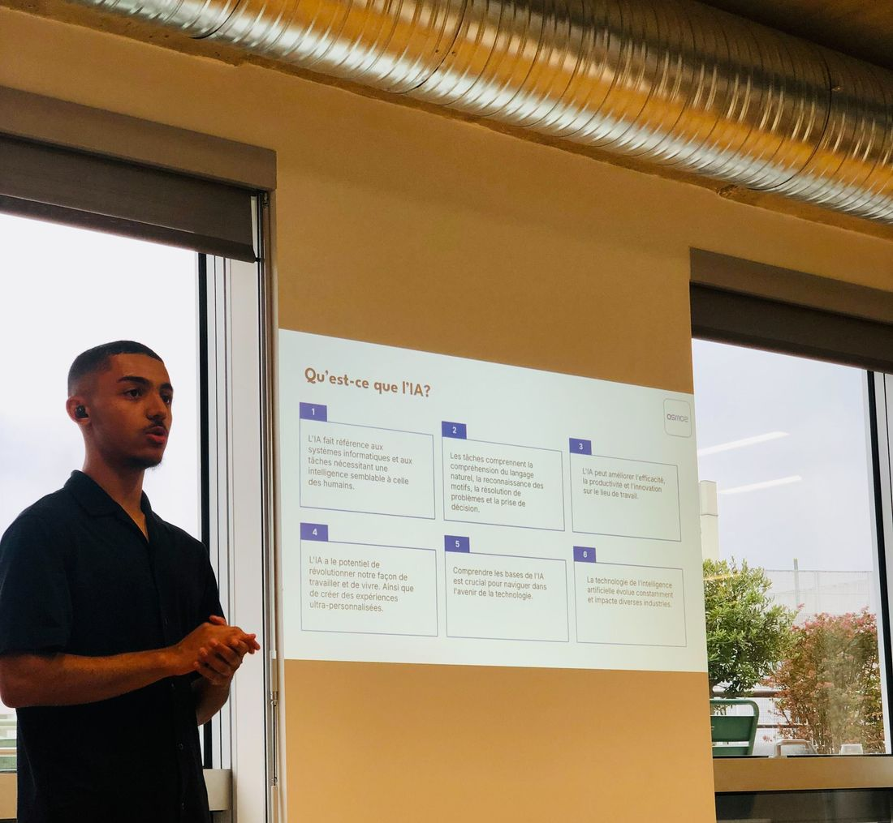

A company does not adopt AI in one go. It climbs, one step at a time.
I joined Digiteka in 2023 as an apprentice web developer. Today I lead its move to AI. I wrote the plan, I train the teams, and I run the platform they work on. Scroll, and the staircase fills in.
AI Lead, DigitekaVideo adtech for media publishersAbout twenty people, four departments
Before the first step
Prove it, then ask.
I had been pitching AI projects since my first year, and a few had shipped. The article-to-video pipeline gave me the proof. On 25 February 2026 I put a written plan in front of the CTO. Its first slide said where we were going: an AI-native company.

One of my first talks to the Digiteka team. The slide reads "What is AI?"Step 01
A chat window everyone already knew.
Putting autonomous agents in front of people who had never used AI at work would have created more distrust than use. So the first step was an open-source chat that looks like the assistants they used at home, hosted on our own server.
Self-hosted, conversations stay in-house
A token budget per person
An account for every colleague
Step 02
Plugged into the company's data.
A chat is only useful once it can reach the work. I connected it to nine systems through MCP, an open standard: the business database through a read-only replica, ad statistics, code, tickets, documents, chat. Together they exposed more than 420 tools, or 473,000 tokens of definitions against a limit of 190,000. I fixed it by loading tools only when the agent asks for them.
9 connectors
Each person signs in as themselves
Read-only by default
Step 03
Eleven agents, and one room with everybody in it.
Then came agents built for a job: ad operations, finance, product, engineering, infrastructure, security, knowledge. Each one is a model, instructions written for that job, and only the connectors it needs. On 11 May 2026 I trained the whole company, with a live demonstration on our real data, a questionnaire before and after, and one-to-one coaching afterwards.
11 specialised agents
No write without human review
Company-wide training
Step 04
A platform for the whole company.
The chat was a first step, never the destination. Once people were at ease, its limits were what held us back. In June 2026 I moved the company to Claude's Team plan and brought the assistant into Slack. Because the connectors follow open standards, they moved across without being rebuilt. Since then each team has been getting its own tools: questions on our data in plain language, client business reviews, monthly financial reporting.
A seat for everyone
The assistant inside Slack
Tools built per team
Four stepsFrom a chat window to a company platform.
Is it repeatable?It comes back every day, week or month.
Does it take several steps?One question and one answer does not need an agent.
Is it driven by data?The inputs live in a system the agent can read.
Can you define it?You can say what a good result looks like.
Can you recover from a mistake?Nothing irreversible happens without a person.
Why a person still signs off
90%81%73%66%59%
1 step2345 steps
An agent that is right nine times out of ten at each step is right 59% of the time after five steps in a row. I gave this slide a full page in the training.
One task, before and after
The client's quarterly business review.
By hand
Pull the figures out of the platform.
Rebuild the tables in a spreadsheet.
Redraw every chart.
Copy them into the client's slide template.
Write the commentary.
With the agent
One request: the client and the period.
The agent queries the data warehouse itself.
It checks the figures against each other.
It fills the client's own slide template.
The account manager reviews, corrects and sends.
Three requests, and where a person signs off
Request
Who asks
What it touches
Where a person signs off
"Build the client's business review."
An account manager, with a client and a period.
The data warehouse, then the client's slide template.
The account manager reviews it before the client sees anything.
"Prepare this month's reporting."
The financial controller, at month end.
The accounting export and the reporting workbook.
The controller checks the figures against a control sheet.
"Is this client's player set up correctly?"
A developer or someone in support.
The configuration database, read-only.
The agent reports what is missing and how to fix it. A person makes the change.
What is still open
The move has started. It is not finished.
Too much rests on me.
I built and run most of this platform. I am documenting it and training colleagues to take over parts of it.
The gain is not measured yet.
People get answers from our data in seconds instead of asking a developer. I can see it, but I have not put a number on it. Adoption and time-saved indicators come next.
Engineering is next.
The next step is AI inside the way we write, test and ship code. My goal is an AI-first engineering team by mid-2027.
Today every colleague has a seat, and people who never wrote a query ask our data questions in plain language.